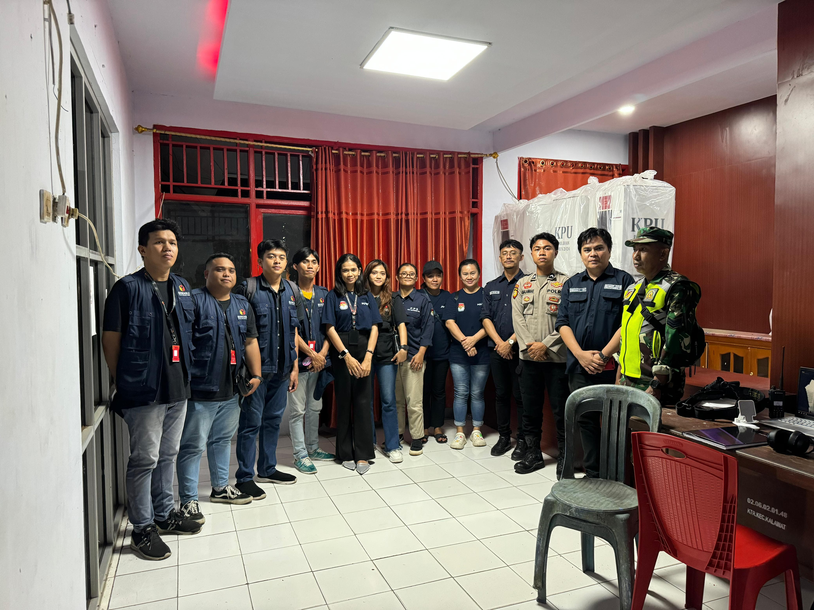

Kristian Aldi Ambalembang Resume
Saya Kristian Aldi Ambalembang, saya adalah Fresh Graduate dari
Universitas Sam Ratulangi, Teknik Informatika. Jujur, disiplin dan
bertanggung jawab selalu saya utamakan dalam melakukan segala pekerjaan.
Saya siap untuk belajar dan memanfaatkan keterampilan yang saya miliki
untuk berkarir di bidang IT. Saya mampu bekerja secara individu maupun
tim, memiliki semangat dan motivasi untuk terus berkembang dan tertarik
untuk mempelajari hal yang baru

Pendidikan
2020 - 2024
Universitas Sam Ratulangi
Program Studi Teknik Informatika
IPK : 3.85
Pengalaman Kerja
-
IT Helper Intern ( 2023 - 2024 )
PT.Rantai Data Pintar ( Chainsmart )
Chainsmart merupakan perusahaan blockchain yang memberikan solusi bagi
para pelaku bisnis dengan menawarkan pengelolaan data dan keamanan
data. Adapun jobdesk saya seperti :
- Ikut dalam pengembangan 3 project utama.
-
Menangani 3 dashboard yang digunakan dalam proyek sebagai Front End.
-
Debuging dan Stress Test pada pengembangan yang dilakukan serta
pembuatan laporan menggunakan Spreadsheet.

-
Pengawas TPS (2024)
BAWASLU
Saya melaksanakan tugas pegawasan TPS selama dua perioode pemilihan,
yaitu periode pemilihan umum pada bulan februari 2024 dan pilkada
serentak pada bulan november 2024

Skill
-
Soft SKill
- Manajemen Waktu
- Komunikasi
- Berpikir Kritis
- Bergorganisasi
-
Hard SKill
- Desain Web
- Desain Grafis
- Ms. Office
-
Bahasa